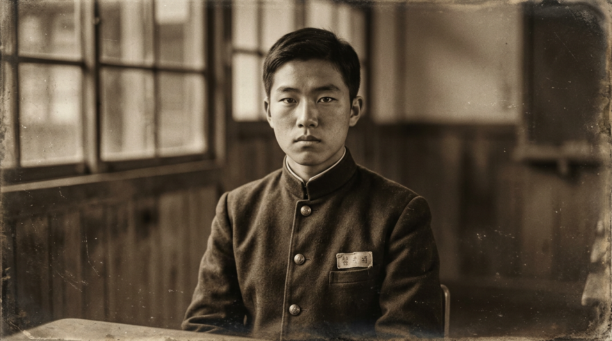

교과서 속 먼 이야기가 아닙니다.
내가 다니는 학교 선배들이 격문을 들었고,
내 동네 거리에서 만세를 불렀습니다.

"격문 종이가 차가웠습니다. 손이 시렸고, 오백 명이 넘었지요."
내수에서 청주로 유학 온 소년. 일곱 살 때 아버지가 한봉수 선생을 따라 세교리 시장에서 횃불을 들었습니다. 그 학교 선배들이 격문을 인쇄했던 청주농고에 입학해, 1930년 1월 21일 드디어 자신의 차례가 왔을 때 거리로 나섰습니다.
※ 박순길은 실제 청주농고 학생들의 기록을 바탕으로 합성한 가상 인물입니다.
역사책 속 숫자가 아니라, 실제 거리와 학교에서 일어난 사건들입니다.
판결문, 신문 스캔, 사진, 증언록 등 지역 항일·친일 관련 자료를 드래그앤드롭으로 제출할 수 있습니다. 검토 후 아카이브에 반영됩니다.